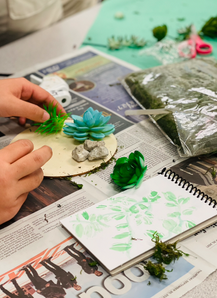
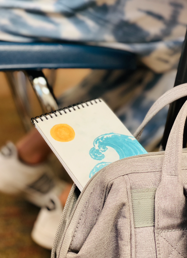
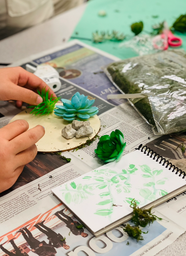
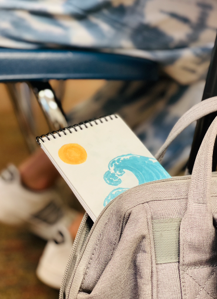

Welcome to Back-to-nature Notebooks! We believe that everyone should have a chance to relax in nature once in a while, so we made an inspirational notebook. It is small and easy to take with you. With inspirational quotes at the top of each page, you can be inspired to write wherever you go. With a painting canvas back cover, the notebook is also customizable. You can paint and design your notebook to be however you would like, and add your own special touch to it. Just remember to relax, dream, and write!
 


